| 厂商 / 产品 | 形态 | 单域规模 | 算力（厂商口径） | 内存 | 互连 | 参考价 | 定位负载 |
|---|---|---|---|---|---|---|---|
| NVIDIA GB300 NVL72 | 整机柜 | 72 GPU + 36 CPU | 1080 PFLOPs FP4 dense | 20 TB HBM3e | NVLink5 130 TB/s | $3–4M 估 | MoE 训练 / 推理 |
| NVIDIA Vera Rubin NVL72 | 整机柜 | 72 GPU + 36 CPU | 约为 GB300 的 1.95× | ~20.7 TB HBM4 | NVLink6 260 TB/s | ≤$8.8M 估 | 万亿 MoE / agentic |
| AMD Helios (MI455X) | 双宽机柜 | 72 GPU + EPYC | 2.9 EF FP4 / 1.4 EF FP8 | 31 TB HBM4 | UALoE 260 TB/s | ~$5.25M 估 | 前沿训练 + 推理 |
| Google TPU v7 Ironwood | Pod / 云 | 256 或 9,216 芯片 | 4,614 TFLOPs / 芯片 | 192 GB HBM / 芯片 | ICI 光交换 | 按芯片·小时 | 推理为主 + 训练 |
| AWS Trainium3 UltraServer | 机架服务器 | 144 芯片 | 362 PFLOPS MXFP8 | 20.7 TB HBM3e | NeuronSwitch 全互联 | 按需实例 | 训练 + 高吞吐推理 |
| Microsoft Maia 200 | 云内自用 | 未公开（以太网 scale-up） | ~10 PFLOPS FP4 / ~5 PF FP8 | 216 GB HBM3e | 以太网 scale-up | 不外卖 | 大模型推理 |
| Cerebras CS-4 | 整机柜 | 3 × WSE-3T | 3 × 250 PFLOPS | 132 GB SRAM | 2.4 Tbps / 芯片 | 未公开 | 超低延迟推理 |
| NVIDIA Groq 3 LPX | 整机柜 | 256 LPU | 低算力、极高带宽 | 128 GB SRAM | 640 TB/s scale-up | 未公开 | 解码、低延迟生成 |
| Tenstorrent Galaxy | 超算集群 | Blackhole 规模组网 | 官方未给总算力 | 32 GB GDDR6 / 卡 | 标准以太网 | 开发卡 $1,399 | 视频生成、LLM 推理 |
| Intel Gaudi 3 | 8 卡服务器 | 8 卡 / 节点 | 14.7 PFLOPS FP8 | 1.5 TB HBM2e | 24 × 200GbE RoCE | ~$125K 宣称 | 训练 / 推理（路线已收窄） |
| 华为 Atlas 950 SuperPoD | 超节点 | 8,192 × Ascend 950 | 8 EF FP8 / 16 EF FP16 | 1,152 TB | UnifiedBus 16.3 PB/s | 未公开 | 万亿参数训练 |
| 华为 Atlas 960E SuperPoD | 超节点 + NPO | 4,096 NPU | 8 EF FP8 / 16 EF FP4 | 1 PB HBM | 5,500 × Hi-ONE 光引擎 | 未公开 | 千亿~万亿模型 |
| 华为 CloudMatrix 384 | 16 机柜超节点 | 384 × Ascend 910C | 约等于/高于 GB200 NVL72 | — | 全光互连 6,912 × 800G | ¥6,000 万 / 套 | 训练 + 推理 |
| 摩尔线程 KUAE | 千卡~万卡集群 | MTT S4000 + MTLink | 未公开 | 48 GB / 卡 | MTLink 240 GB/s | 未公开 | 千亿 LLM 训推 |
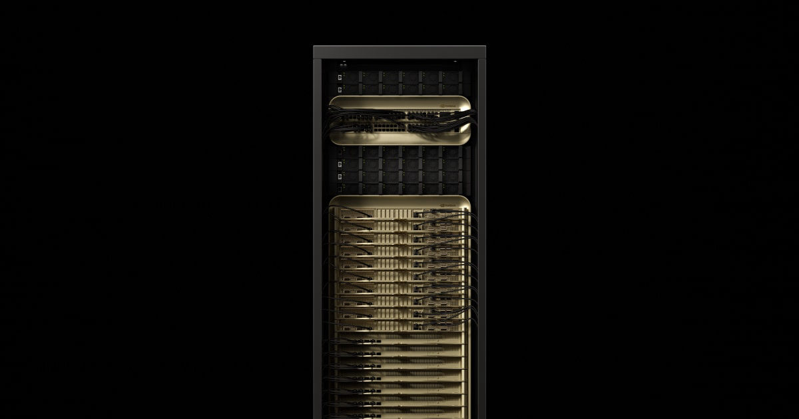
| 形态 | 单机柜 72 × Blackwell Ultra GPU + 36 × Grace CPU，全液冷 |
|---|---|
| 单卡算力 | 15 PFLOPs FP4 dense（稀疏 30 PFLOPs）；FP8 代际与 GB200 相同 |
| 单柜算力 | 1,080 PFLOPs FP4 dense / 1,440 PFLOPs 稀疏；FP8·FP6 720 PF；FP16·BF16 360 PF |
| 显存 | 288 GB HBM3e / 卡（可用 278 GB），8 TB/s / 卡，整柜约 20 TB |
| 互连 | NVLink 5：1.8 TB/s / 卡；域内 130 TB/s；ConnectX-8 / Spectrum-X 做 scale-out |
| 功耗 | 1,400 W TDP / 卡；整柜含主机与散热约 2.12 kW / 卡（≈120–132 kW / 柜） |
| 价格 | 约 $3–4M / 柜（第三方估算）；SemiAnalysis TCO 口径 $2.31（超大规模自持）~$5.00 / 卡·hr（零售） |
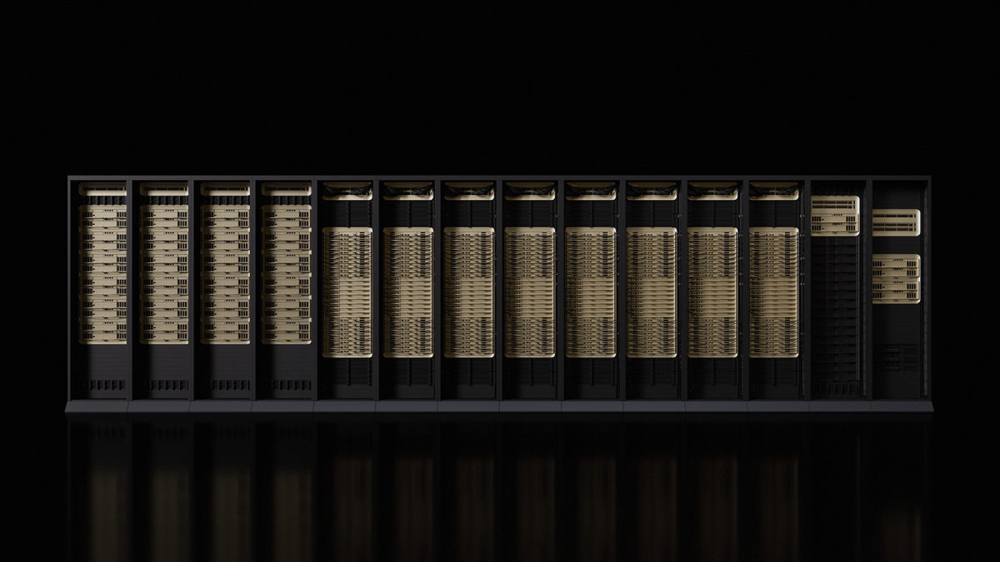
| 形态 | NVL72：72 × Rubin GPU + 36 × Vera CPU；NVL144 CPX：再加上 72 颗 Rubin CPX |
|---|---|
| 算力 | 官方口径：推理 token 成本比 Blackwell 低 10×；MoE 训练所需 GPU 数降到 1/4 |
| CPX 变体 | 单颗 30 PFLOPs NVFP4 + 128 GB GDDR7；NVL144 CPX 整柜 8 EFLOPS AI + 100 TB 快速内存 + 1.7 PB/s |
| 显存 | Rubin GPU 288 GB HBM4 / 颗（NVL72 约 20.7 TB） |
| 互连 | NVLink 6：3.6 TB/s / 卡，整柜 260 TB/s；配 ConnectX-9、BlueField-4、Spectrum-6 |
| 价格 | 最高约 $8.8M / 柜（Tom's Hardware，2026-03）；其中 HBM4 + LPDDR5X 料件成本约 $2M |
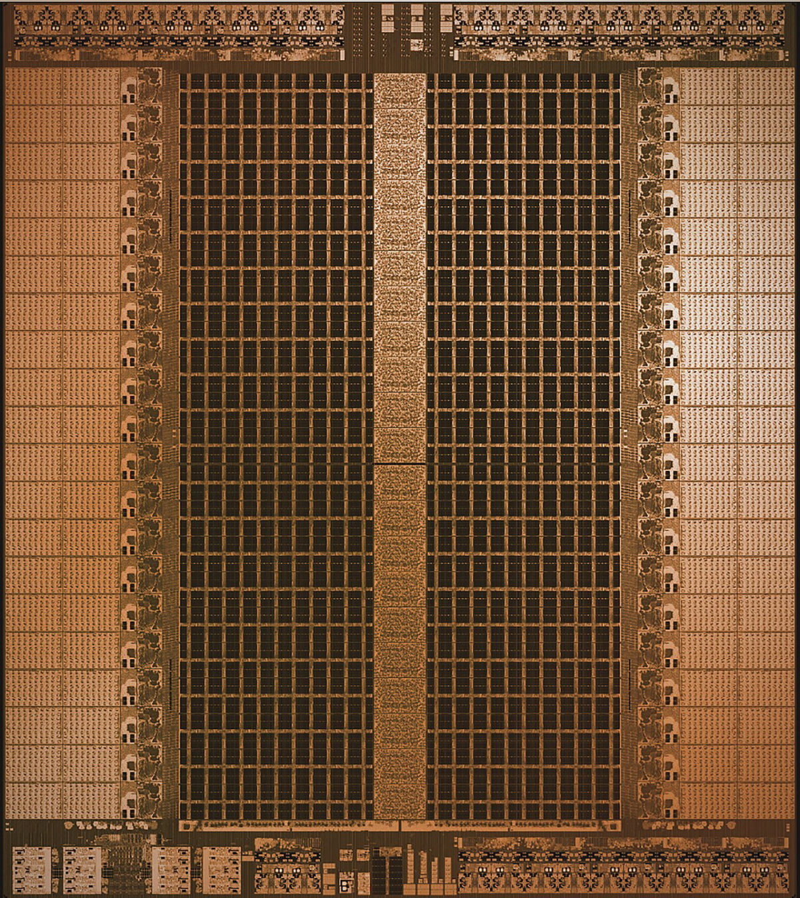
| 形态 | 液冷 LPX 机柜，256 颗 Groq 3 LPU（每托盘 8 颗） |
|---|---|
| 存储 | 单颗 500 MB SRAM；整柜 128 GB SRAM（对比：单颗 Rubin 有 288 GB HBM4） |
| 带宽 | 单颗 22–150 TB/s 级；整柜 scale-up 640 TB/s |
| 价格 | 未公开。背景：NVIDIA 以约 $20B 的“准收购”方式拿到 Groq 技术与团队（非正式并购） |
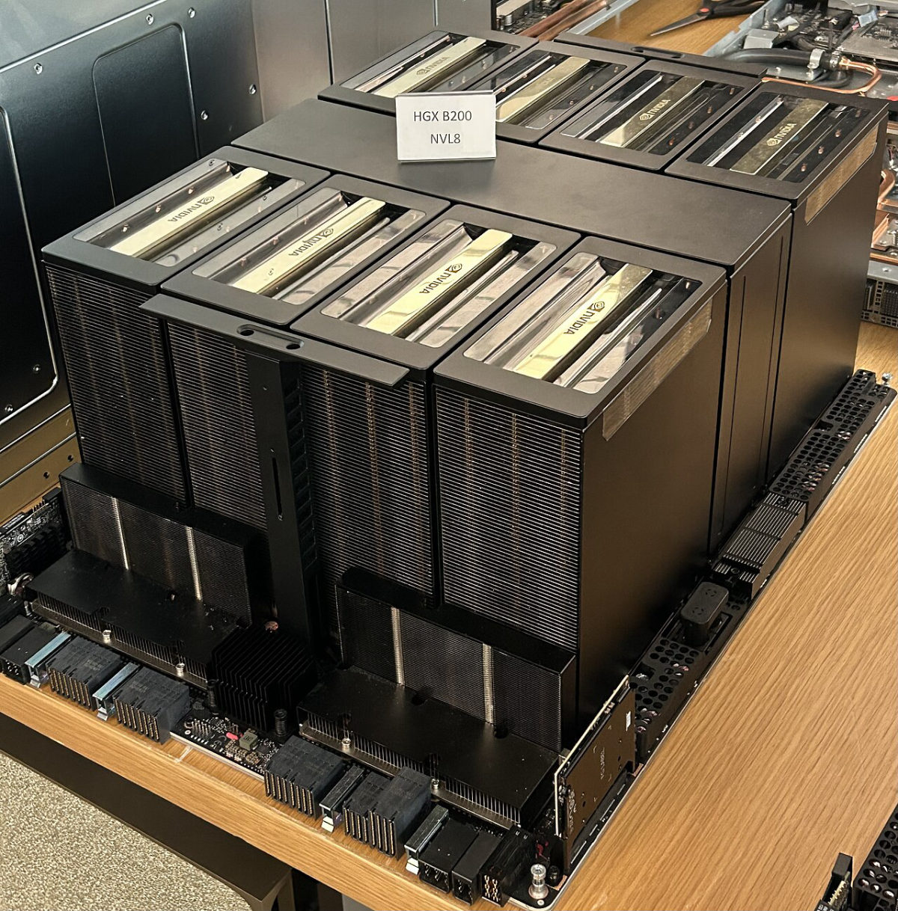
| 形态 | 8 × B200 GPU，单机 8 卡 NVLink 域，可堆成 SuperPOD |
|---|---|
| 显存 | 180 GB HBM3e / 卡，整机约 1.4 TB |
| 算力 | 约 72 PFLOPs FP4 dense / 机（8 × 9 PF 级） |
| 价格 | 整机约 $0.5–0.7M 量级（第三方估算，随 HBM 行情波动大） |
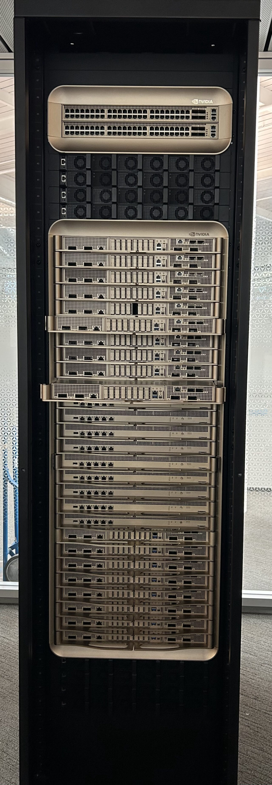
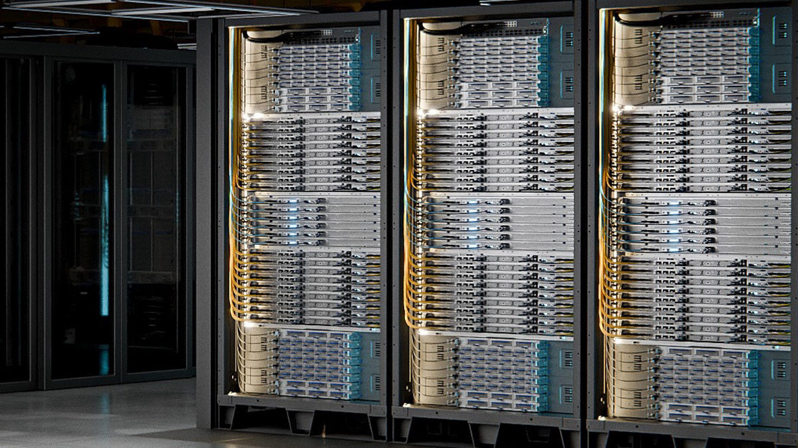
| 形态 | 双宽 OCP ORW 机柜：18 个计算托盘 × 4 颗 MI455X = 72 GPU，每托盘 1 颗 EPYC “Venice” 9006 |
|---|---|
| 单卡 | 432 GB HBM4，23.3 TB/s 带宽，40 PFLOPs FP4 |
| 整柜算力 | 2.9 EFLOPS FP4 dense / 1.4 EFLOPS FP8 |
| 整柜内存 | 31 TB HBM4，合计 1.7 PB/s 带宽 |
| 互连 | scale-up：UALoE（UALink over Ethernet）260 TB/s，每 GPU 1.8 TB/s 双向；scale-out：Pensando Vulcano 800，43 TB/s |
| 价格 | 约 $5.25M / 柜（第三方估算，官方未公布） |
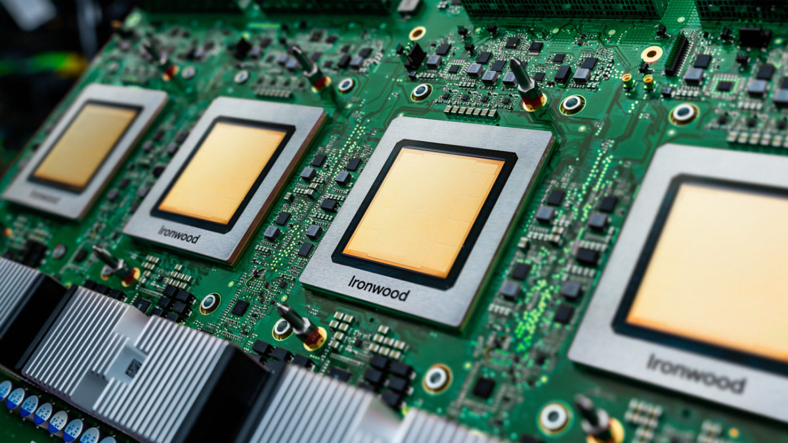
| 单芯片 | 4,614 TFLOPs 峰值，192 GB HBM |
|---|---|
| 集群形态 | 256 芯片与 9,216 芯片两种 Pod；片间用 ICI + 光交换（OCS） |
| 下一代（2026-04 发布） | TPU 8t：12.6 PFLOPs FP4、216 GB HBM3e @ 6,528 GB/s，SuperPod 9,600 芯片 = 121 EFLOPS FP4；TPU 8i：10.1 PFLOPs FP4、288 GB HBM3e @ 8,601 GB/s、384 MB SRAM |
| 价格 | 不零售，按芯片·小时出租（历史代际 v5e ≈$1.2、v5p ≈$4.2 / 芯片·hr；Ironwood 未公开） |
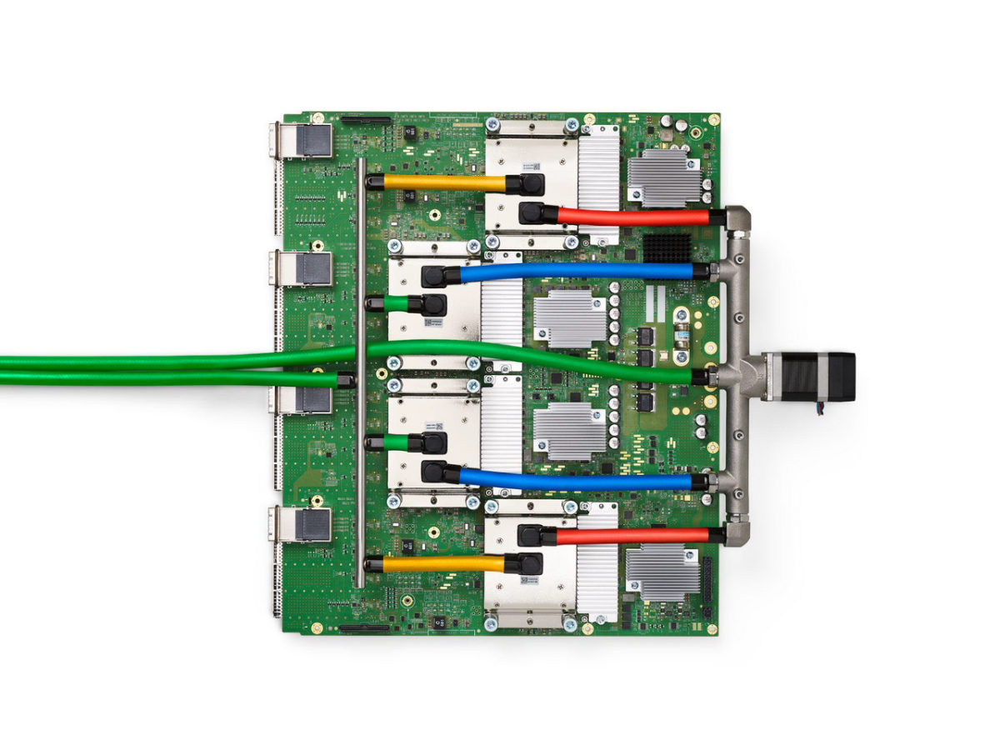
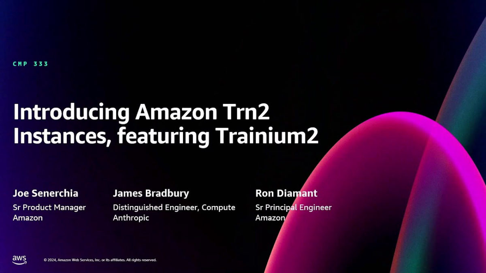
| 形态 | Trainium3 UltraServer：144 颗芯片一个 scale-up 域 |
|---|---|
| 算力 | 362 PFLOPS MXFP8（整机） |
| 显存 | 144 GB HBM3e / 芯片，4.9 TB/s；整机 20.7 TB，合计 706 TB/s |
| 互连 | NeuronSwitch all-to-all；单 UltraServer 28.8 Tbps scale-out；UltraCluster 3.0 可扩到数十万芯片 |
| 上一代 | Trn2 实例：16 芯片 / 20.8 PF FP8 / 1.5 TB / 46 TB/s；Trn2 UltraServer：64 芯片 / 83.2 PF / 6 TB / 185 TB/s / 12.8 Tbps EFAv3 |
| 价格 | 只按 EC2 实例计费；官方称 Trn2 的性价比比 P5e/P5en（NVIDIA）好 30–40% |
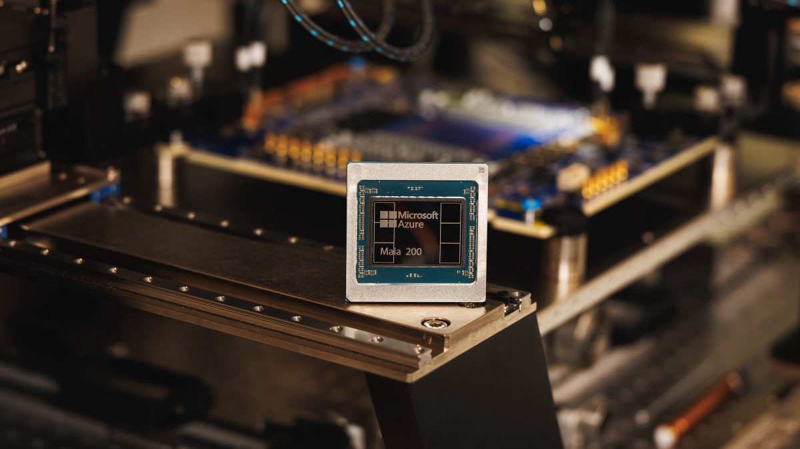
| 工艺 | TSMC 3 nm，超过 1,400 亿晶体管 |
|---|---|
| 算力 | 约 10 PFLOPs FP4 / 约 5 PFLOPs FP8 |
| 显存 | 216 GB HBM3e，约 7 TB/s；片内 272 MB SRAM |
| 互连 | 自研以太网 scale-up fabric + 定制数据搬运 |
| 价格 | 不卖硬件。官方口径是“每美元性能比上一代 Azure 硬件高约 30%” |
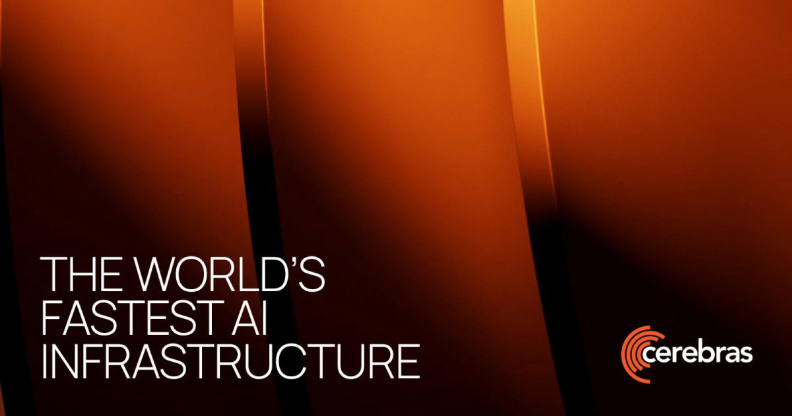
| 芯片（WSE-3T） | 46,225 mm²，4 万亿晶体管，900,000 个 AI 优化核心 |
|---|---|
| 算力 | 250 PFLOPs / 颗（官方口径，约 19× 晶体管、56× 算力于 B300） |
| 存储 | 44 GB 片内 SRAM，43.2 PB/s 带宽；2.4 Tbps 片间连接 |
| 系统 | CS-4 机柜 = 3 × WSE-3T，2026 Q3 起批量供货 |
| 价格 | 未公开（历史上 CS-2/CS-3 为百万美元级整机，主要按云服务售卖） |
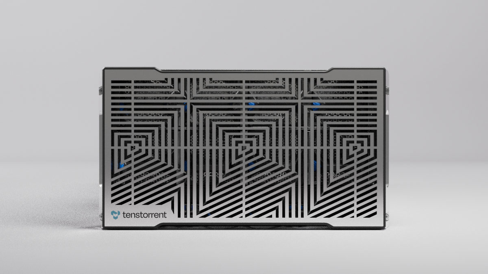
| 芯片 | Blackhole Tensix 处理器：120 个 Tensix 核心，16 个 RISC-V 大核 |
|---|---|
| 显存 | p150a 32 GB GDDR6（p100a 28 GB），300 W，4 × QSFP-DD 800G |
| 价格 | 开发卡 $999 / $1,399（p100a / p150a）；Galaxy 超算系统价格未公开 |
| 组网 | 标准以太网 scale-out，无专有互连；软件栈 TT-Forge / TT-Lang 开源 |
| 形态 | 8 卡节点，卡间 24 × 200GbE RoCE（以太网 scale-up） |
|---|---|
| 算力 | 1,835 TFLOPS FP8 / BF16 每卡；8 卡节点约 14.7 PFLOPS FP8 |
| 显存 | 128 GB HBM2e / 卡，3.7 TB/s；8 卡合计 1.5 TB |
| 价格 | Intel 发布时宣称 8 卡系统约 $125K，明显低于同期 H100 系统 |
| 现状 | Falcon Shores 已被取消；2026 年 MLPerf 提交转向 Xeon + Arc Pro，Gaudi 未见新战绩 |
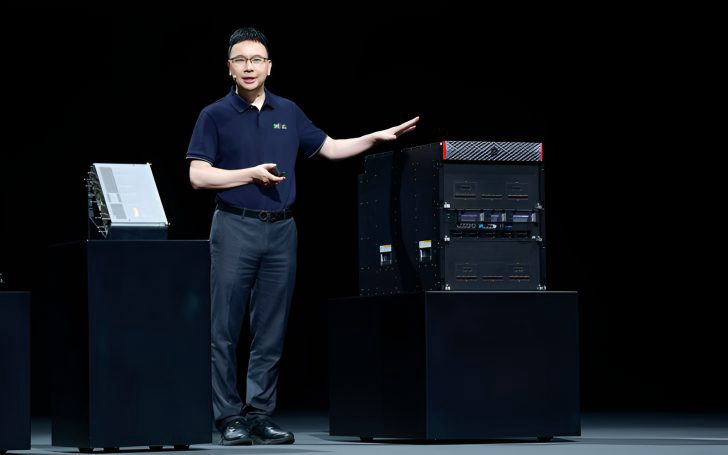
| CloudMatrix 384 | 384 × Ascend 910C，16 个机柜（12 计算 + 4 网络），6,912 个 800G 光模块，全光互连；¥6,000 万 / 套（约 $8.2M） |
|---|---|
| Atlas 950 SuperPoD | 8,192 × Ascend 950；8 EFLOPS FP8 / 16 EFLOPS FP16；1,152 TB 内存；互连 16.3 PB/s；UnifiedBus 统一总线；单套占地约 1,000 m² |
| Atlas 960E SuperPoD | 2026-09 发布：4,096 NPU；8 EFLOPS FP8 / 16 EFLOPS FP4；1 PB HBM；5,500 个 Hi-ONE NPO 光引擎（7.2 Tbps / 个）替代 48,000 个传统光模块，省电 >550 kW，可用性 99.8% |
| 扩展能力 | 多套 960E 可组成 SuperCluster：起步 51.2 万 NPU，多轨拓扑可达 100 万 NPU（2027 目标） |
| 单卡（Atlas 350 / 950PR） | FP4 1.56 PFLOPS，112 GB 自研 HBM（HiBL 1.0），1.4 TB/s，600 W；官方称算力为 NVIDIA H20 的 2.87× |
| 路线图 | Ascend 960DT 提前至 2027 Q1，960PR 2027 Q3；970（2028）、980（2029），保持一年一代 |
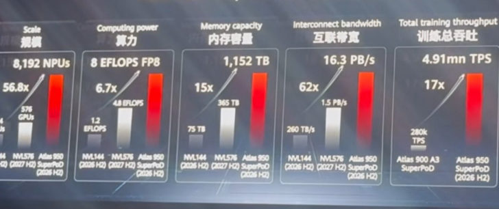
| 加速卡 | MTT S4000：第三代 MUSA 架构，48 GB 显存，768 GB/s 带宽 |
|---|---|
| 互连 | 自研 MTLink：支持 2/4/8 卡 Bridge 互连，卡间 I/O 带宽 240 GB/s |
| 集群 | KUAE 千卡平台，基于双路 8 卡服务器 MCCX D800 X1 一体化交付 |
| 价格 | 未公开（以整机/集群项目形式报价） |
这几家都在 2025–2026 年完成或推进上市，集群多通过 OEM / 云以项目形式交付，官方很少公开可比的单价与集群规格。下表只记录可核实的部分，留白处请不要用猜测填充。
| 厂商 | 产品线 | 互连 | 集群形态 | 公开价格 | 备注 |
|---|---|---|---|---|---|
| 寒武纪 | 思元 MLU 590 / 690 系列 | MLU-Link | 以 OEM 整机与云服务交付，千卡级为主 | 未公开 | 2025-12 目标把产能提升到 50 万片量级（良率偏低）；公开规格与基准极少 |
| 沐曦 MetaX | 曦云 C500 / C600 | MetaXLink | 训推一体集群 | 未公开 | 2025-12 科创板上市，首日涨幅近 700%；2026 拟赴港再融资 |
| 壁仞科技 | BR100 / BR104 推理卡 | BLink | 智算集群异构混训（任工作组组长单位） | 未公开 | 2026-01 港交所上市 |
| 百度昆仑芯 | M100（训练）/ M300（推理） | 自研片间互联 | 万卡级智算集群，百舸平台交付 | 未公开 | 2026 年分拆赴港 IPO，市场传闻估值 500 亿美元级 |
| 天数智芯 Iluvatar CoreX | 天垓（训练）/ 智铠（推理） | 自研 | 云边协同训推一体 | 未公开 | 2026-01 港交所上市；2026 年字节跳动被曝洽谈采购 |
| 燧原科技 / 海光 DCU | 邃思系列 / 深算系列 | 自研 | 以整机与云服务交付 | 未公开 | 在国产替代项目中出现频率高，但集群级公开指标稀缺 |
| 硬件 | 运行配置 | prefill tok/s/卡 | decode tok/s/卡 | prefill/decode 比 | TTFT | TPOT | 记录日期 |
|---|---|---|---|---|---|---|---|
| GB300 | dynamo-trt / FP4 / PD 分离 / 34 卡（P18+D16）/ conc 1229 | 22,094 | 3,108 | 7.1× | 3.58 s | 19.0 ms | 2026-02-03 |
| B300 | dynamo-trt / FP4 / PD 分离 / 26 卡（P10+D16）/ conc 589 | 17,893 | 1,398 | 12.8× | 2.94 s | 21.1 ms | 2026-01-28 |
| B200 | dynamo-trt / FP4 / PD 分离 / 20 卡（P12+D8）/ conc 548 | 16,511 | 3,095 | 5.3× | 2.73 s | 18.4 ms | 2026-01-29 |
| GB200 | dynamo-sglang / FP8 / PD 分离 / 72 卡（P40+D32）/ conc 1024 | 8,568 | 1,339 | 6.4× | 3.28 s | 18.6 ms | 2026-02-09 |
| MI355X | mori-sglang / FP4 / PD 分离 / 24 卡（P8+D16）/ conc 128 | 6,173 | 384 | 16.1× | 1.77 s | 17.3 ms | 2026-05-28 |
| H200 | dynamo-trt / FP8 / PD 分离 / 16 卡（P8+D8）/ conc 64 | 2,651 | 331 | 8.0× | 3.47 s | 19.0 ms | 2026-03-23 |
| H100 | dynamo-trt / FP8 / PD 分离 / 64 卡（P16+D48）/ conc 30 | 495 | 21 | 23.6× | 3.86 s | 20.3 ms | 2026-02-08 |
| MI325X | sglang / FP8 / 共置 / 16 卡 / conc 8 | 342 | 43 | 8.0× | 0.45 s | 21.1 ms | 2026-09-10 |
| MI300X | sglang / FP8 / 共置 / 16 卡 / conc 4 | 187 | 23 | 8.1× | 0.90 s | 19.4 ms | 2026-05-18 |
| 硬件 | 运行配置 | prefill tok/s/卡 | decode tok/s/卡 | TTFT | TPOT | 记录日期 |
|---|---|---|---|---|---|---|
| B300 | dynamo-trt / FP4 / PD 分离 / 18 卡（P2+D16） | 22,456 | 2,808 | 2.94 s | 20.9 ms | 2026-01-28 |
| B200 | dynamo-trt / FP4 / PD 分离 / 44 卡（P12+D32） | 17,720 | 6,638 | 3.47 s | 17.7 ms | 2026-01-29 |
| GB300 | dynamo-trt / FP8 / PD 分离 / 24 卡（P8+D16） | 10,865 | 5,437 | 2.12 s | 21.9 ms | 2026-06-17 |
| GB200 | dynamo-sglang / FP4 / PD 分离 / 48 卡（P16+D32） | 10,071 | 5,032 | 1.14 s | 22.1 ms | 2026-02-08 |
| H200 | dynamo-trt / FP8 / PD 分离 / 64 卡（P8+D56） | 3,953 | 565 | 4.01 s | 21.8 ms | 2026-03-23 |
| H100 | dynamo-trt / FP8 / PD 分离 / 64 卡（P16+D48） | 364 | 121 | 0.52 s | 20.8 ms | 2026-02-08 |
| MI355X | atom / FP4 / 共置 / 16 卡 / conc 128 | 784 | 782 | 0.15 s | 20.0 ms | 2026-05-20 |
| MI325X | sglang / FP8 / 共置 / 16 卡 | 101 | 100 | 0.10 s | 19.1 ms | 2026-05-18 |
| MI300X | sglang / FP8 / 共置 / 16 卡 | 91 | 90 | 0.16 s | 21.0 ms | 2026-05-18 |
结论：8K/1K、50 tok/s/用户这个真实 SLO 下，Blackwell 系（GB300 / B300 / B200）的 prefill 每卡是 H100 的 33–45 倍，decode 每卡是 H100 的 66–148 倍；Hopper 到 Blackwell 的这段跳变主要来自 FP4 + PD 分离 + MTP 的组合，不是单看硅片就能解释。
| 硬件 | prefill 峰值 tok/s/卡 | （出现在） | decode 峰值 tok/s/卡 | （出现在） | 总吞吐峰值 tok/s/卡 |
|---|---|---|---|---|---|
| GB300 | 22,658 | 22 tok/s/用户 | 7,057 | 30 tok/s/用户 | 18,132 |
| B300 | 20,844 | 23 tok/s/用户 | 6,176 | 26 tok/s/用户 | 15,868 |
| GB200 | 18,580 | 79 tok/s/用户 | 6,228 | 27 tok/s/用户 | 14,952 |
| B200 | 17,266 | 26 tok/s/用户 | 5,226 | 30 tok/s/用户 | 13,430 |
| MI355X | 14,535 | 52 tok/s/用户 | 2,550 | 12 tok/s/用户 | 8,175 |
| H200 | 3,366 | 32 tok/s/用户 | 1,034 | 25 tok/s/用户 | 2,965 |
| H100 | 1,134 | 40 tok/s/用户 | 283 | 40 tok/s/用户 | 850 |
| MI325X | 921 | 15 tok/s/用户 | 115 | 15 tok/s/用户 | 1,036 |
| MI300X | 793 | 13 tok/s/用户 | 99 | 13 tok/s/用户 | 892 |
| 来源 | 硬件 | prefill | decode | 口径说明 |
|---|---|---|---|---|
| 华为 CloudMatrix384 论文（2025-06，arXiv 2506.12708） | 昇腾 910 × 384 超节点 | 6,688 tok/s/NPU 4K prompt |
1,943 tok/s/NPU TPOT < 50 ms；若要 <15 ms 则 538 |
INT8 量化，EP32（prefill）/ EP320（decode），prefill-decode-caching 三段分离；效率 4.45（prefill）/1.29（decode）tokens/s/TFLOPS |
| DeepSeek 自用部署（同上论文引用） | H800 × 32 / 144 | 9,213 tok/s/GPU 含 56.3% 缓存命中；不含则 4,026 |
1,850 tok/s/GPU | FP8，DP32+EP32（prefill）/ DP144+EP144（decode），双 microbatch 流水；这是华为论文里的对照基线 |
| NVIDIA 官方（GB300 产品页） | GB300 NVL72 | — | 输出吞吐比 H100 高 50× | ISL 32K / OSL 8K，FP4 + Dynamo PD 分离 vs H100 FP8 in-flight batching；只给相对值 |
| MLPerf Inference v6.1（2026-09） | GB300 NVL72 | — | 72 卡 679,740 tok/s（≈9,441/卡） 288 卡 2,705,130 tok/s（≈9,393/卡） |
DeepSeek-R1 离线场景，输入输出合计、不分阶段；72→288 卡扩展效率 ≈99% |
| MLPerf Inference v6.1 | MI355X × 512 | — | 离线/服务器双项领先（AMD 最高规模提交） | 同样不分 prefill/decode；小规模（8 卡）档位仍落后 GB300 约 17%（Llama 3.1-8B 口径） |
| Tenstorrent 官方（2026-04） | Galaxy Blackhole | TTFT < 4 s 100K 上下文 |
350+ tok/s/用户 DeepSeek-R1 671B，batch 8–64 |
decode 给的是单用户交互度，不是每卡吞吐；无法与表 1 的 tok/s/卡换算 |
| Cerebras 官方（2026-08） | CS-4 | — | 声称比 GPU 方案快 30× | 未给绝对吞吐、未指明对比型号与 batch，属厂商宣称 |
| SambaNova 官方（2025-02） | SN40L | — | DeepSeek-R1 671B 宣称“最快、能效最高” | 发布稿未给可与 InferenceX 对齐的每卡吞吐，只有相对宣称；随软件版本变化大，仅作历史参考 |
/api/v1/benchmarks?model=DeepSeek-R1-0528，1,310 条记录，抓取于 2026-09-28）；
华为《Serving Large Language Models on Huawei CloudMatrix384》(arXiv:2506.12708)；NVIDIA GB300 NVL72 产品页；MLPerf Inference v6.1 汇总；各厂商发布稿。
注：InferenceX 目前没有 Vera Rubin、TPU v7、Trainium、昇腾、Cerebras、Groq、Tenstorrent 的 R1 数据——这些平台的评测模型已经换成 DeepSeek-V4 / Qwen3.5 一代。集合通信时间 / 端到端时间 要到手，比看 TFLOPS 有用